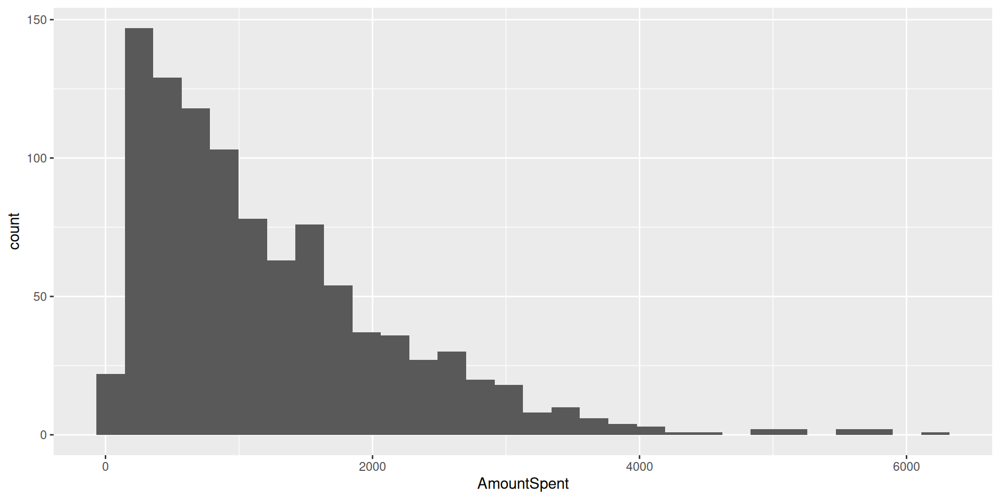
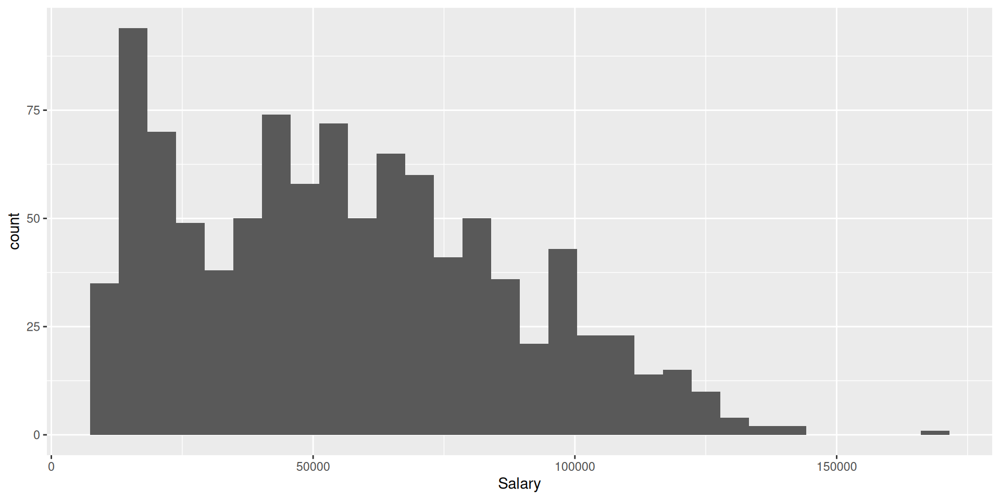
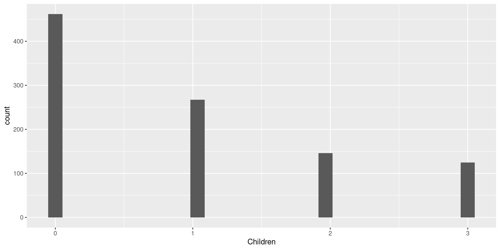
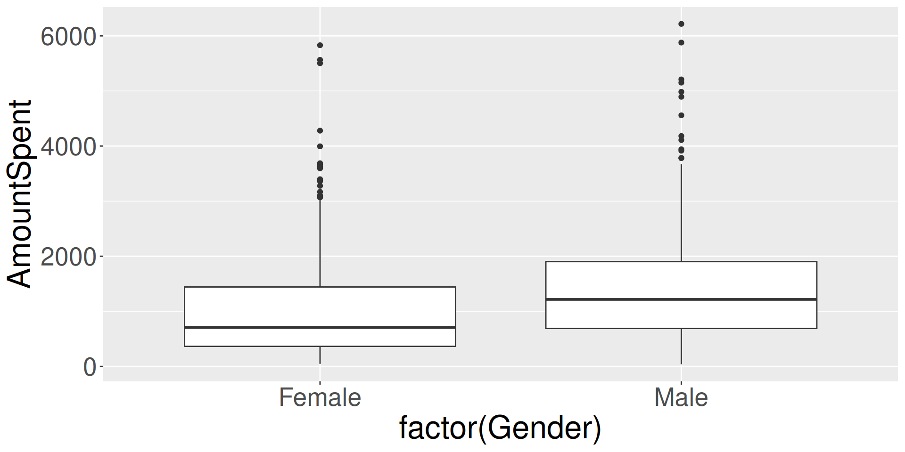
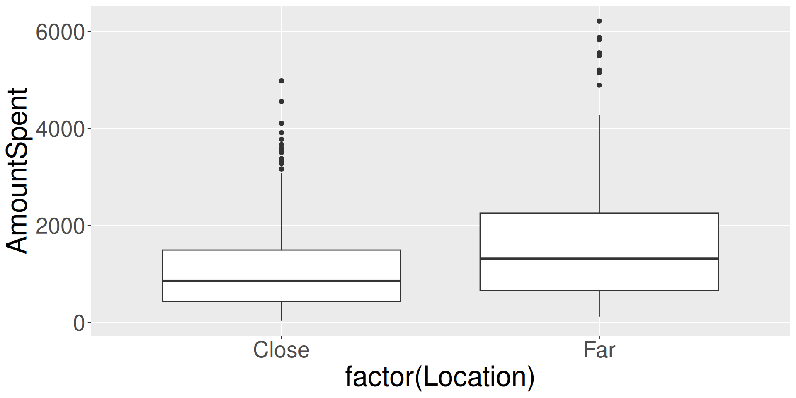
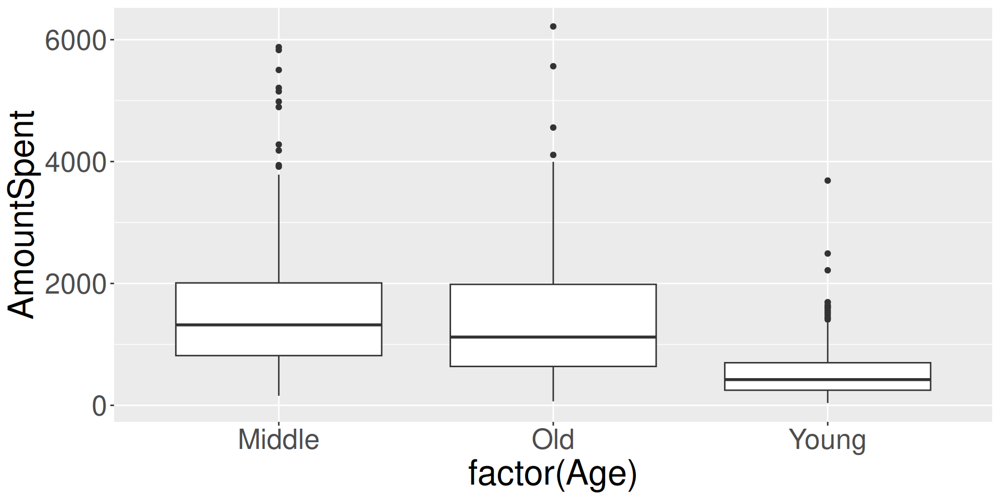
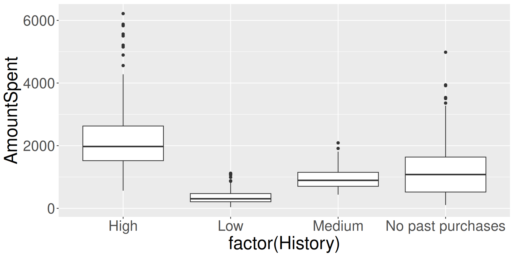
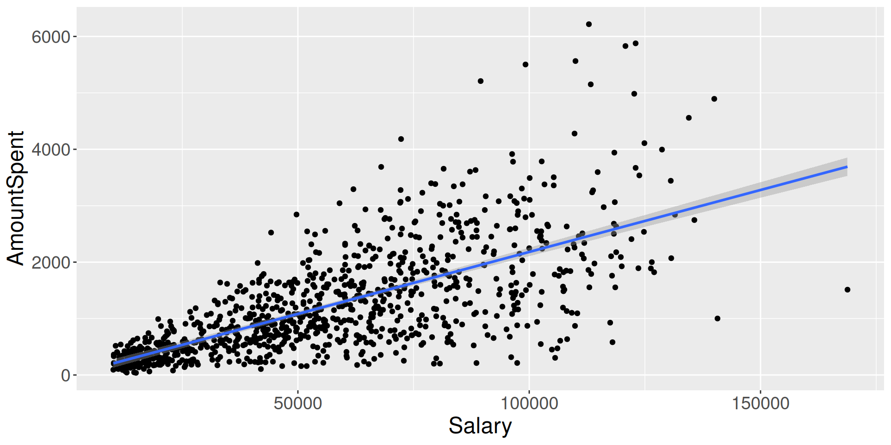

R Class
Paulo Fagandini, Marlon Francisco, Diogo Franquinho
Nova SBE
Clean work environment
USE with CAUTION: this will delete everything in your environment
Load packages
Set working directory
Load data
Data set overview
Variable type: numeric
| skim_variable | n_missing | complete_rate | mean | sd | p0 | p25 | p50 | p75 | p100 | hist |
|---|---|---|---|---|---|---|---|---|---|---|
| Salary | 0 | 1 | 56103.90 | 30616.31 | 10100 | 29975.00 | 53700 | 77025.0 | 168800 | ▇▇▅▂▁ |
| Children | 0 | 1 | 0.93 | 1.05 | 0 | 0.00 | 1 | 2.0 | 3 | ▇▅▁▂▂ |
| Catalogs | 0 | 1 | 14.68 | 6.62 | 6 | 6.00 | 12 | 18.0 | 24 | ▇▇▁▆▆ |
| AmountSpent | 0 | 1 | 1216.77 | 961.07 | 38 | 488.25 | 962 | 1688.5 | 6217 | ▇▃▁▁▁ |
Deal with NAs
Create a new category “No past purchases”.
Create new variable PastPurchases
Make it equal to “Past purchases” if it is an old customer
Quick summary statistics table
Descriptive stats
======================================================
Statistic N Mean St. Dev. Min Max
------------------------------------------------------
Salary 1,000 56,103.900 30,616.310 10,100 168,800
Children 1,000 0.934 1.051 0 3
Catalogs 1,000 14.682 6.623 6 24
AmountSpent 1,000 1,216.770 961.069 38 6,217
------------------------------------------------------Quick summary statistics table
This will create a new file DS.html that you can include in your final document.
New data frame all numeric
Summary statistics table with numeric
Descriptive stats: all numeric data
=========================================================================
Statistic N Mean St. Dev. Min Max
-------------------------------------------------------------------------
AgeMiddle 1,000 0.508 0.500 0 1
AgeOld 1,000 0.205 0.404 0 1
AgeYoung 1,000 0.287 0.453 0 1
GenderFemale 1,000 0.506 0.500 0 1
GenderMale 1,000 0.494 0.500 0 1
OwnHomeOwn 1,000 0.516 0.500 0 1
OwnHomeRent 1,000 0.484 0.500 0 1
MarriedMarried 1,000 0.502 0.500 0 1
MarriedSingle 1,000 0.498 0.500 0 1
LocationClose 1,000 0.710 0.454 0 1
LocationFar 1,000 0.290 0.454 0 1
Salary 1,000 56,103.900 30,616.310 10,100 168,800
Children 1,000 0.934 1.051 0 3
HistoryHigh 1,000 0.255 0.436 0 1
HistoryLow 1,000 0.230 0.421 0 1
HistoryMedium 1,000 0.212 0.409 0 1
HistoryNo.past.purchases 1,000 0.303 0.460 0 1
Catalogs 1,000 14.682 6.623 6 24
AmountSpent 1,000 1,216.770 961.069 38 6,217
PastPurchasesNo.past.purchases 1,000 0.303 0.460 0 1
PastPurchasesPast.purchases 1,000 0.697 0.460 0 1
-------------------------------------------------------------------------Store the summary statistics in a file
Create correlation matrix
Display correlation matrix with title
Correlation Matrix
================================================
AmountSpent Salary Catalogs Children
------------------------------------------------
AmountSpent 1 0.70 0.47 -0.22
Salary 0.70 1 0.18 0.05
Catalogs 0.47 0.18 1 -0.11
Children -0.22 0.05 -0.11 1
------------------------------------------------Store the correlation matrix in a file
Histogram of AmountSpent
Histogram of Salary
Histogram of Catalogs

Histogram of Children
Amount spent by gender
Distribution of amount spent by location
Distribution of amount spent by age
Distribution of amount spent by history
Scatterplot of amount spent and salary
Impact of Salary on AmountSpent
Regression results
Impact of Salary on Amount Spent
===============================================
Dependent variable:
---------------------------
AmountSpent
-----------------------------------------------
Salary 0.022***
(0.001)
Constant -15.318
(45.374)
-----------------------------------------------
Observations 1,000
R2 0.489
Adjusted R2 0.489
Residual Std. Error 687.065 (df = 998)
F Statistic 956.694*** (df = 1; 998)
===============================================
Note: *p<0.1; **p<0.05; ***p<0.01Regression results
Extract and store model coefficients
Predict amount spent when profits = 100,000
Add new column to data set with predicted salary and residuals
Define multiple regression models, incrementally
Run models 1 to 3
Output table with Models 1 to 3
Regression Analysis - Determinants of Amount Spent
========================================================
Dependent variable:
-------------------------------
AmountSpent
(1) (2) (3)
--------------------------------------------------------
Salary 0.02*** 0.02*** 0.02***
(0.001) (0.001) (0.001)
Catalogs 47.70*** 41.75***
(2.76) (2.45)
Children -198.69*** -171.98***
(17.09) (16.70)
GenderMale -54.28*
(32.17)
HistoryLow -355.06***
(65.43)
HistoryMedium -408.81***
(52.37)
HistoryNo past purchases -0.04
(51.06)
LocationFar 436.05***
(35.86)
Constant -15.32 -442.76*** -228.38***
(45.37) (53.72) (79.90)
--------------------------------------------------------
Observations 1,000 1,000 1,000
R2 0.49 0.66 0.75
Adjusted R2 0.49 0.66 0.74
Residual Std. Error 687.06 562.53 485.43
F Statistic 956.69*** 640.00*** 365.60***
========================================================
Note: *p<0.1; **p<0.05; ***p<0.01Output table with Models 1 to 3
Test in model 2 if the coefficient of Salary if statistically significant
Linear hypothesis test:
Salary = 0
Model 1: restricted model
Model 2: AmountSpent ~ Salary + Catalogs + Children
Res.Df RSS Df Sum of Sq F Pr(>F)
1 997 689995620
2 996 315171647 1 374823972 1184.5 < 2.2e-16 ***
---
Signif. codes: 0 '***' 0.001 '**' 0.01 '*' 0.05 '.' 0.1 ' ' 1Test in model 2 if the effect of 4 catalogs is the symmetric of the effect of 1 child
Test in model 2 if the coefficients associated with Catalogs and Children are jointly significant
Linear hypothesis test:
Catalogs = 0
Children = 0
Model 1: restricted model
Model 2: AmountSpent ~ Salary + Catalogs + Children
Res.Df RSS Df Sum of Sq F Pr(>F)
1 998 471114029
2 996 315171647 2 155942381 246.4 < 2.2e-16 ***
---
Signif. codes: 0 '***' 0.001 '**' 0.01 '*' 0.05 '.' 0.1 ' ' 1
Econometrics